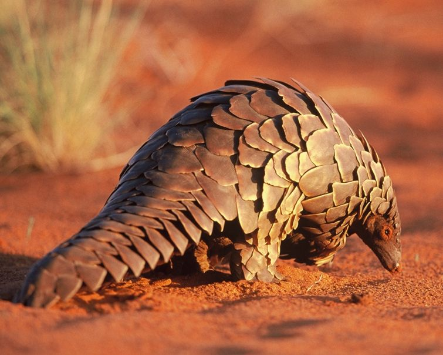
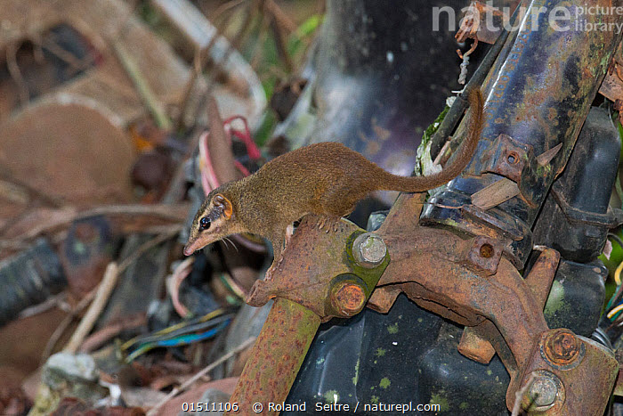

Pangolin, also known as venting, paint, are mammals. The Pangolin Ministry now has only one family of Manidae, with three genera Manis, Phataginus and Smutsia. Rhino body has large and hard scales. They are anteaters living in tropical Asia and Africa. Most types of pangolins live at night, using their sense of smell to find insects. During the day curled up like a ball to sleep.
The whole pangolin body is covered with hard scales, leaving only the abdomen. The scales are sharp and pointed to help defend. The scales are made of keratin like claws, horns, and other mammals hair. When born, pangolin scales soften but then harden with time. They also defend themselves by spraying a solution of bad acid from the gland near the anus. Pangolin has long, hard nails; Forelegs are used to destroy insect nests for food. Because the nails are long, they do not go by trampling on the ground but vice versa, pangolins move by retracting their front legs and stepping on the instep. Their mouth has no teeth; The main food is ants and termites. They use long tongues (up to 40 cm) with very sticky drool to catch prey. The tongue of the tongue is deep in the abdomen. The pangolin tail is capable of holding, to help vin to the tree branches while climbing. Pangolins measured from 30 to 100 cm. The female is usually smaller than the male. They nest in hollow tree holes or burrow deep underground.
Pangolins are pregnant for 120-150 days, giving birth from one (African pangolin) to three children (Asian pangolin). Usually give birth to one child, rarely two. Pangolin weighs 80-450 g. They cling to the mother's tail, when in danger, she hides the baby under the abdomen and curls up, but there are also pangolins hidden in the cave until 2-4 weeks to go out. They stop milk at about three months and at two years of age they are mature, can reproduce.
The main food for pangolins is ants and termites. In addition, they can feed on other invertebrates such as bee larvae, flies, worms and crickets.
Dendrogale murina is the smallest of the 19 species in the order Scandentia. Head body length is 11.5 cm, with tail length from 4 to 5 cm, weighing about 35 to 55 g. They are colored lights and have facial markings, which are used to distinguish between other smooth-tailed shrews (dendrogale melanura), which lack facial signs. The upper body is brown / black in color, while the lower face is lighter. They have short hairs and lack shoulder stripes. The tail is darker and darker as it approaches the peak. This species has relatively small claws
Dendrogale Murina tends to reproduce when fruiting of local trees and shrubs are at its maximum (Blomstrum, 2001). Their weaning period is about 30 days and they are often twins. Finely shrews in the North were born weighing 6 to 10 g and were hairless, blind and completely dependent on the mother. The mother breastfeeds only from two nipples. Breast milk is very high in fat. On average, a pair of shrews mate and give birth every 45 days. Dendrogale Murina reaches sexual maturity after 2 months. Once sexual maturity has reached, the offspring are forced to leave the nest; they live alone until they find a suitable partner
In captivity D. Murina lives 9-10 years, but in the wild they can live up to a little over 12 years
consisting primarily of fruit, arthropods and small vertebrates. D. Murina's digestive areas are simple, allowing them to pass food very quickly. This means they have to eat basically all day to maintain energy.
8 Ton That Thuyet, My Dinh, Tu Liem,
Ha Noi, Viet Nam.
0966469746 (Do Van Huan)
0666729716 (Nguyen Minh Nghia)
0522697743 (Duong Thanh Binh)
0849818969 (Le Van Phuong)
0373485924 (Nguyen Thanh Lam)
KawasakiZoo@gmail.com